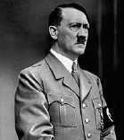

Adolf Hitler (1889-1945), 1939’da Polonya’yı işgaliyle II. Dünya Savaşı’nın başlangıcını tetikleyen Almanya’nın diktatörüydü. Savaş, söze dökülmesi çok zor bir yıkım ve insanlık ıstırabının eşlik ettiği elli milyon ölüme neden olarak sonunda yerkürenin neredeyse her köşesine yayılmıştı. Hitler’in, mihver güçleri Japonya ve İtalya’dan aldığı yardıma rağmen, 1943 yılıyla beraber dalga Almanya aleyhine olacak şekilde tersine döndü. 1945’te Hitler, zafer kazanmış Müttefik orduları Berlin merkezindeki yer altı sığınağına yaklaştığında, kafasına bir kurşun sıkarak intihar etti.

Birçok diktatörün tersine Hitler, hükümdarlığı boyunca arkasına geniş bir halk desteği aldı. Aslında Nazi Partisi, 1930’ların başlarında Almanya’nın son demokratik seçimlerinde iyi iş çıkarmıştı. Hitler, insanı adeta hipnotize eden bir konuşmacıydı ve karizması çoğu Alman’ı, Naziler’in I. Dünya Savaşı’nda (1914-1918) yaşanan aşağılayıcı yenilgiden sonra ulusun düşüşünü tersine çevirebileceğine ikna etti. Ancak Almanya’nın teslim olmasından sonra Hitler’in hemşerilerinin çoğu, ülkelerini harabeye çevirmiş olan “führer”lerini (lider) reddettiler.
Hitler, Avusturya-Macaristan İmparatorluğu’nun Almanca konuşan bölgesi olan Avusturya’da doğdu. Bir ressam olmayı istemişti, ama Viyana’daki sanat okulları onu bu fikrinden vazgeçirdiler. Almanya’ya taşındı ve I. Dünya Savaşı’nda birkaç küçük yara alarak savaştı. Savaştan önce Hitler’in hiçbir güçlü siyasi inancı yoktu. Ama Almanya’nın yenilgisinden sonra, bir Yahudi komplosunun ulusun aşağılanmasında bir bakıma gizliden gizliye sorumluluğu olduğuna dair, halkça tutulan teoriyi benimsedi. Geleceği belirsiz, Yahudi karşıtı bir siyasi parti olan Nasyonal Sosyalistler’e katıldı ve hemen sonrasında partinin lideri oldu.
Yahudi karşıtlığı Almanya’da I. Dünya Savaşı’ndan önce ve sonra çok yaygın olmasına rağmen, Almanlar’ı Nazi Partisine çeken şey, Hitler’in kişiliğinin kendisiydi. Savaş zamanı Almanya’nın silah fabrikalarının başında bulunan bir mimar olan Albert Speer, Hitler’in konuşmasını ilk kez duyduğu zamanki hislerini, “herhangi bir kuşkuyu, çekinceyi süpürüp atan, insanın hemen hissedeceği bir coşkunluk dalgası” olarak tarif etti.
EK BİLGİLER:
1. İntiharından sonra istilâcı Sovyet güçleri Hitler’in cesedinden arta kalanları ele geçirdiler. Kafatası, Moskova’da bir hükümet binasındadır.
2. Naziler, II. Dünya Savaşı’nda Almanya’ya karşı olan Batı ülkelerinde bile birçok destekçiyi kendisine çekti. Savaştan önce Amerika Birleşik Devletleri’nde Hitler’in hayranları içinde ünlü pilot Charles Lindbergh ve araba üreticisi Henry Ford da vardı.
3. Hitler, Berlin’de yapılan 1936 Olimpiyatları’nda Alman ırkının üstünlüğü teorisini ispat etmeyi umdu. Ama siyah bir Amerikalı atletin, Olimpiyat tarihindeki en ünlü başarılardan biri olarak, dört altın madalyayı birden kazanması, bu umutlarını yıktı.